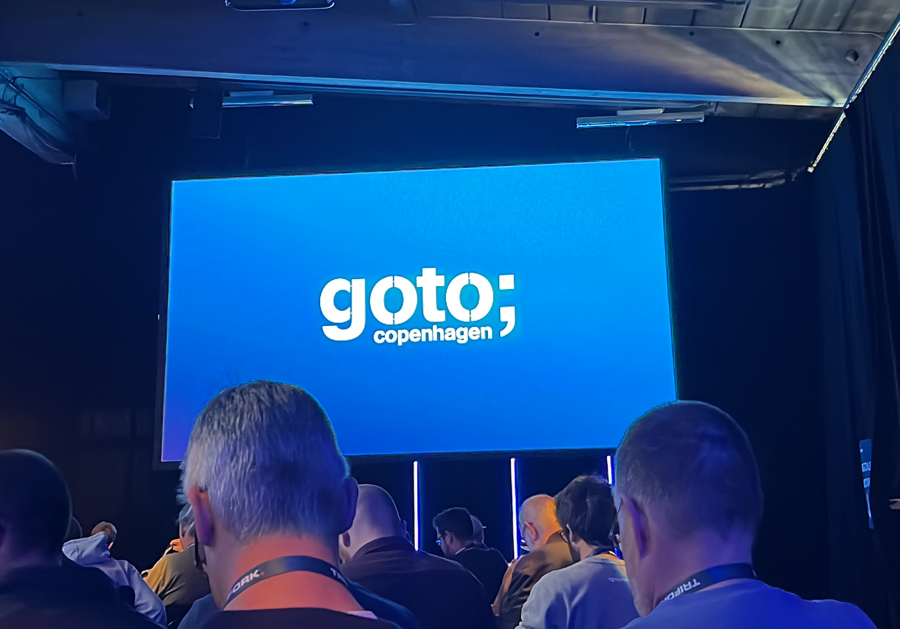

I was given the opportunity to attend the GOTO Copenhagen conference from October 1 to 3. Overall, I found the content and sentiment of the conference relevant to what’s happening “out there” in the industry.
Thus, I wanted to take some time to summarize my learnings and observations from those three days.
The Genie is Out of the Bottle Link to heading
“AI this, GenAI that, blah, blah, blah.” We’ve all heard it and now block it out. I generally accept that GenAI, LLMs, and the like are here to stay (though I can’t say I’m thrilled about it), but the hype train is real and unavoidable.
Let’s get it out of the way: the AI industry is using billions in funding to generate an all-or-nothing “get on the train now or risk being homeless tomorrow” message around AI, especially for software developers. That pressure is annoying and difficult to ignore completely, and I hope the bubble bursts soon 🤞.
But hearing Kent Beck (who refers to LLMs / Copilot-esque tools as the “genie”)—who has been in the software business longer than I’ve been alive—describe his near-daily use of these tools suggests they’re not all hype.
Whether you use any of the plethora of AI tools now available, and regardless of your opinion about them, the likelihood that they will either disappear completely or take over all engineering tasks is low. In fact, the chance they’ll disappear entirely is practically zero.
“Shitty but Amazing” Link to heading
Lu Wilson used this memorable phrase in an excellent talk by about how the “canvas,” or interface we use to interact with LLMs, might become much richer than the boring, old ChatGPT chat interface (and go check out the tl;draw tool demoed during the session).
The phrase described the output from LLMs themselves, and it resonates with users of the technology. Watching a model determine how it should try to answer a query can be as amazing as its answer is bad—not to mention the infamous “hallucinations.”
This will likely improve incrementally with newer models, but it will be interesting to see if these issues will ever disappear completely with the technology as it currently exists.
New Technology, Old Challenges Link to heading
The talks I attended seemed bimodal regarding GenAI: either the talk was entirely about GenAI, or it wasn’t mentioned at all.
I don’t want to infer too much from this, but my main takeaway is that GenAI still doesn’t solve the biggest challenges we face as developers: communicating with stakeholders and users, understanding and challenging business requirements, negotiating with your product owner, and so on.
Perhaps this is because GenAI doesn’t currently span the entire journey from business need to deployed software solution. Maybe it’s because GenAI isn’t fully capable of this, and perhaps the current iteration of the technology never will be.
Speculation aside, even amid the GenAI boom, we as developers still need to focus on the bread and butter of our profession: solving an agreed-upon business problem in the simplest way possible—code or not. This is something AI assistants are still terrible at, generating layer upon layer of AI slop instead of cutting away unnecessary complexity (our jobs).
Spending our efforts on limiting, reducing, and quarantining complexity will likely have substantial impact, even in the bright and shiny AI Age.
Non-Determinism – Inherent Flaw or Limitable Side Effect? Link to heading
When you prompt an LLM to provide an output in a structured format, such as JSON, it will almost always do so. But not always.
This would likely be referred to as a hallucination, but perhaps a better way of describing it would be non-deterministic behavior: you can give the same model the exact same input multiple times, but the LLM responds with a different output every time. In the end, the LLM is just an incomprehensibly large statistical model, statistically choosing what the best answer (or next character) is.
This is fine, or even desirable, in many use cases, but it’s quite terrible for software development. We’ve built our entire industry on the determinism of computers, and our non-flaky unit tests depend on it. Introduce an LLM into the mix, especially one that’s queried by your code, and you’ve added a giant unpredictable risk to your application.
The main opinion here was to break up any programmatic interaction with LLMs into as small and predictable pieces as possible and implement retries when the output differs from what you expect—just how we generally treat distributed systems.
However, it got me wondering: if we have to work so hard to limit the tool that was essentially designed without limits (or beyond known limits), maybe we should just do the thing that we’re trying to get the model to do?
The balance here is up for debate, but at least answering the question is wise, instead of throwing any and every query, no matter how big, small, sophisticated, or stupid, at a giant LLM.
Industry (Existential, Even?) Unrest — Especially for the Less Experienced Link to heading
This last point is more a feeling or intuition than the earlier observations. I attended a “Tech Truth Circle” with Martin Fowler and Kent Beck, where they engaged in a somewhat stilted conversation and answered audience questions.
Two things stood out to me (based on audience questions):
- The sentiment of less experienced developers has changed significantly in the last 2–3 years.
- Software engineers are looking for the “next generation” of leaders, and it’s really hard to know what that looks like in the AI Age.
Seemingly gone are the days of, “you get a CS degree and I give you a $100,000+ / year salary, plus stock options!” This is understandably concerning to people who likely entered their studies under what now feels like a set of false pretenses.
While acknowledging that concern, this might be somewhat healthy, as it provides a taste of what almost every other person experiences in their education-to-gainful-employment journey. At least, that’s my perspective as someone who was educated and has worked in an entirely different industry.
That said, the second point hints at what I consider a larger unease in the profession as a whole—not just for the less experienced. This is completely expected. For a profession that has enjoyed a sense of vocational awe and golden handcuffs for several decades, it can feel vulnerable as parts of it seem to be crumbling, with non-traditional developers and “laypeople” starting to deploy their own applications.
I have no answers here, other than time will tell. When the dust settles after the current hype train finally comes to a stop (or derails), let’s hope the existence of our profession remains justifiable—and not just for those already in it.
In the meantime, let’s keep focusing on our craft, and remind ourselves that GenAI is still “just another tool” to make us better at our jobs—to think anything else might provoke existential questions that we don’t have time to address, especially since that next ticket in the sprint won’t (yet) complete itself.
Final Thoughts Link to heading
Thanks for taking time to read my thoughts and musings, all entirely dependent on the presentations I chose to attend. As Martin Fowler advised a less experienced software engineer: focus on the time between your Jira tickets, as this will provide the greatest opportunity for growth—that’s where I found the time to write this article.
And yes, for those wondering, I did feed this article through an LLM before publishing…